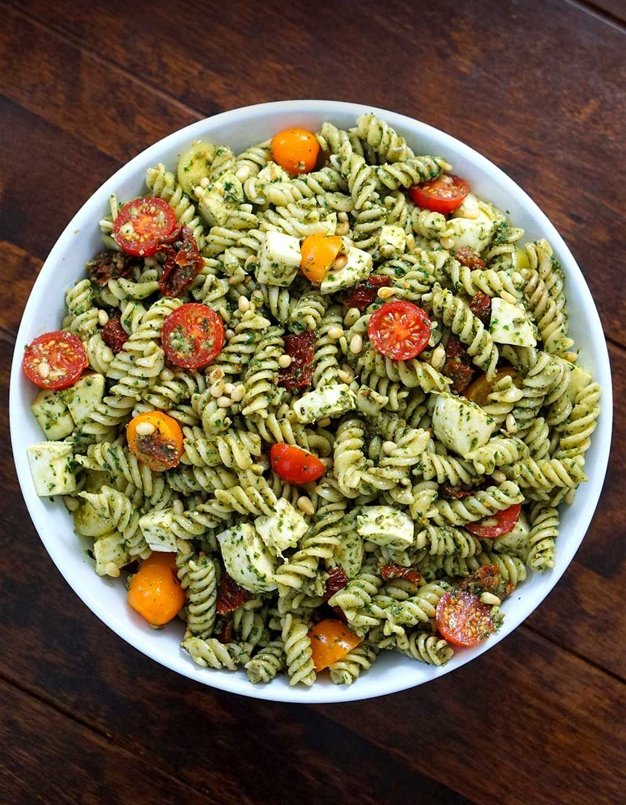

Difficulty- Easy
Total Time- 25 mins
INGREDIENTS :
- 1 pound whole grain pasta (fusilli, rotini, penne or farfalle)
- 1 pint cherry tomatoes, halved or quartered
- 3 handfuls baby arugula or spinach
- Optional cheese: ½ cup or more crumbled feta cheese, little mozzarella balls or grated Parmesan
- Optional additions: ½ cup thinly sliced Kalamata olives and/or 1 can (15 ounces) chickpeas, rinsed and drained (or 1 ½ cups cooked chickpeas)
- Freshly ground black pepper
Pesto
- ½ cup pepitas
- ½ cup packed fresh basil
- ½ cup packed fresh flat-leaf parsley or additional basil
- ¼ cup lemon juice (about 2 lemons)
- 1 clove garlic, roughly chopped
- ½ teaspoon fine salt
- ⅓ cup extra-virgin olive oil6 slices of bread
INSTRUCTIONS :
- Bring a large pot of salted water to boil for the pasta. Cook the pasta until al dente according to the package directions. Before draining, reserve about ½ cup pasta cooking water, then drain and immediately rinse the pasta under cool water to prevent the noodles from sticking together. Transfer the pasta to a large serving bowl.
- Meanwhile, to prepare the pesto: In a small skillet, toast the pepitas over medium heat, stirring often, until they are fragrant and making little popping noises, about 4 to 5 minutes. Pour half of the pepitas into a bowl for later (we will use them as garnish).
- Pour the remaining pepitas into a food processor. Add the basil, parsley, lemon juice, garlic and salt. Process while slowly drizzling in the olive oil, stopping to scrape down the sides as necessary, until the pepitas have broken down to create a pretty smooth sauce.
- To assemble the pasta salad, pour all of the pesto over the pasta and toss until the pasta is lightly and evenly coated, adding a tiny splash of reserved pasta cooking water if necessary to thin it out. Then add the cherry tomatoes, arugula, remaining toasted pepitas, and any optional add-ins (cheese, olives and/or chickpeas).
- Toss again to combine, then season to taste with pepper. If the pasta needs more flavor, add salt, to taste, or a splash of lemon juice. If the flavors are too bold, let it rest for a few minutes, and add a little splash of olive oil if necessary to tone down the rest. This recipe will keep well, covered and refrigerated, for up to 4 days.